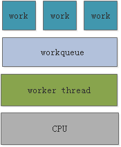
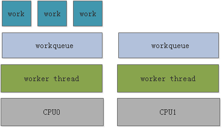
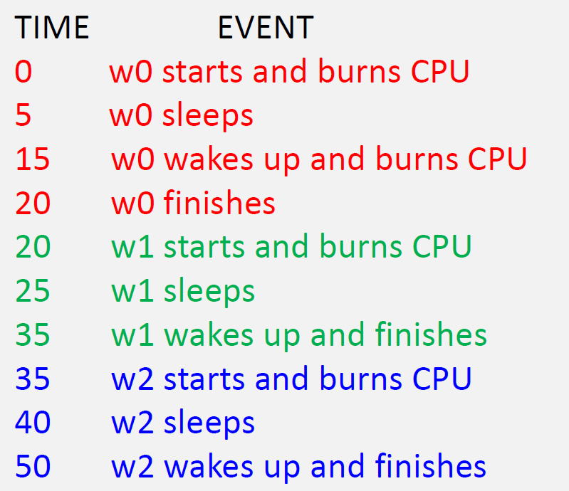
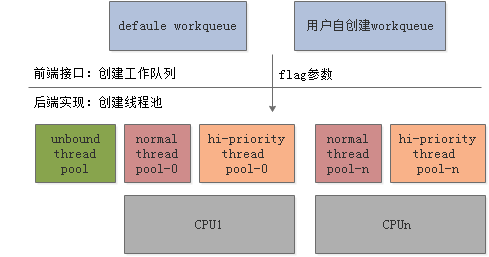

CH4-中断的上半部与下半部
中断的上半部与下半部
Linux内核将中断分为上半部和下半部的主要目的就是实现中断处理函数的快进快出，我们在使用request_irq申请中断的时候注册的中断服务函数属于中断处理的上半部，只要中断触发，那么中断处理函数就会执行。
上半部：上半部就是中断处理函数，那些处理过程比较快，不会占用很长时间的处理就可以放在上半部完成。
下半部：如果中断处理过程比较耗时，那么就将这些比较耗时的代码提出来，交给下半部去执行，这样中断处理函数就会快进快出。
可以参考：
- 如果要处理的内容不希望被其他中断打断，那么可以放到上半部。
- 如果要处理的任务对时间敏感，可以放到上半部。
- 如果要处理的任务与硬件有关，可以放到上半部
- 除了上述三点以外的其他任务，优先考虑放到下半部
软中断
Linux 内核使用结构体softirq_action 表示软中断， softirq_action结构体定义在文include/linux/interrupt.h中softirq_action
1 | struct softirq_action |
在/include/linux/interrupt.h 文件中一共定义了10 个软中断，如下所示：interrupt.h
1 | static struct softirq_action softirq_vec[NR_SOFTIRQS] __cacheline_aligned_in_smp; |
数组softirq_vec 有10 个元素。softirq_action结构体中的action成员变量就是软中断的服务函数，数组softirq_vec是个全局数组，因此所有的CPU(对于SMP系统而言)都可以访问到，每个CPU都有自己的触发和控制机制，并且只执行自己所触发的软中断。但是各个CPU所执行的软中断服务函数确是相同的，都是数组softirq_vec 中定义的action函数。
特点：
执行上下文：软中断上下文。处于中断退出阶段，不属于任何进程。
抢占与睡眠：不能睡眠/阻塞（因为不属于进程，没有任务结构体去调度）。执行时开中断，可以被新的硬件中断打断，但不能被自身嵌套（同一个CPU上同类型软中断不会重入）。
并发性：所有CPU上都可以同时运行，即使是同一种类型的软中断。这意味着开发者必须自己处理复杂的锁机制（如自旋锁）来保护共享数据，编程难度高。
执行延迟：延迟极低。一旦中断退出，会立刻检查并执行pending的软中断，响应非常快。
静态分配：内核编译时静态定义（如
HI_SOFTIRQ,TIMER_SOFTIRQ,NET_TX_SOFTIRQ,NET_RX_SOFTIRQ），数量有限，不能动态注册。机制：通过
raise_softirq()触发，在irq_exit()中检查并执行。对性能要求极高、执行频率非常高的场景。
典型代表：网络子系统（收发数据包）、块设备子系统（IO调度）。
内核定时器的底半部 (
TIMER_SOFTIRQ) 也使用它。
软中断API函数
注册软中断
1 | void open_softirq(int nr, void (*action)(struct softirq_action *)); |
- 参数：
nr：软中断号（0-9），例如：TASKLET_SOFTIRQ、HI_SOFTIRQ等action：软中断处理函数指针
- 说明：注册一个软中断类型及其处理函数
触发软中断
1 | void raise_softirq(unsigned int nr); |
- 参数：
nr：要触发的软中断号
- 说明：在适当的时候（通常是中断返回时），内核会检查并执行已触发的软中断
实验三
伪代码：
1 |
|
tasklet
Tasklet 是一种软中断（SoftIRQ） 机制，用于处理中断下半部（bottom half）的任务。它运行在中断上下文（但不在硬中断处理函数中），具有以下特点：
特点：
- 执行上下文：软中断上下文（基于
HI_SOFTIRQ和TASKLET_SOFTIRQ两种软中断实现）。 - 抢占与睡眠：不能睡眠/阻塞，原因同软中断。
- 并发性：这是与软中断的关键区别。同一种类的tasklet在多个CPU上是串行执行的。一个tasklet一旦在某CPU上被调度执行，其他CPU不会同时执行同一种类的tasklet。这大大降低了并发编程的复杂度，通常不需要考虑复杂的锁。
- 执行延迟：延迟低，与软中断类似，机制相同。
- 动态分配：可以动态创建和初始化，使用灵活。
- 机制：通过
tasklet_schedule()调度。
使用场景：
- 需要延后执行、频率较高但不需要复杂并发控制的设备驱动程序。
- 是大多数设备驱动程序首选的底半部机制（除非性能要求极高到必须用软中断）。
- 典型例子：按键中断、鼠标中断等。将读取数据等操作放在顶半部，将数据处理和报告事件的工作放在tasklet中。
API函数
| 函数/宏 | 说明 |
|---|---|
DECLARE_TASKLET(name, _callback) |
声明并初始化一个 tasklet |
void tasklet_init(struct tasklet_struct *t, void (*func)(unsigned long), unsigned long data) |
动态初始化一个 tasklet |
void tasklet_schedule(struct tasklet_struct *t) |
调度一个普通优先级的 tasklet |
void tasklet_hi_schedule(struct tasklet_struct *t) |
调度一个高优先级的 tasklet |
void tasklet_kill(struct tasklet_struct *t) |
杀死（取消）一个 tasklet |
实验四
本次实验是基于实验一中的代码进行编写，我们首先分析需要将哪部分的代码放在中断的下半部分，按键消抖和状态检测不需要在中断上半部立即执行，因为它们非紧急处理。
主要的代码分析：
1 | struct tasklet_struct tasklet; |
代码：
1 |
|
工作队列
工作队列（Workqueue） 就是一种非常常用的将工作推后到进程上下文中执行的方法。
它的核心思想是：
你把一个想要推后执行的任务（函数）包装成一个工作（work）。
将这个工作提交到一个队列（queue） 中。
内核会有一个或多个专用的内核线程（称为工作者线程，worker thread）被创建来处理这个队列。
当线程被调度时，它会从队列中取出工作并执行其中指定的函数。
1
你的工作 (work) ---> 被加入 ---> 工作队列 (workqueue) ---> 由 ---> 工作者线程 (worker thread) 处理
特点：
- 执行上下文：进程上下文。由专门的内核线程(
kworker)来执行其工作函数。 - 抢占与睡眠：可以睡眠/阻塞！这是它与前两者最根本的区别。因为它运行在进程上下文，可以被调度器抢占，也可以调用
schedule()主动让出CPU，或者等待信号量、分配内存时阻塞。 - 并发性：默认情况下，工作项（work）会被排入一个全局队列，由某个
kworker线程执行，并发性由锁控制。也有并发工作队列（CMWQ）等更先进的机制来精细控制并发度。 - 执行延迟：延迟相对较高。因为它需要唤醒一个内核线程，然后由调度器来分配CPU时间片，这比直接在中退出路径上执行的软中断/ tasklet 要慢。
- 动态分配：可以动态创建。可以创建自己的专用工作队列线程，也可以使用内核共享的默认工作队列。
- 机制：通过
schedule_work()调度到默认队列，或queue_work()到自定义队列。
使用场景：
- 需要睡眠的任务。这是选择工作队列的最决定性因素。
- 需要执行大量、耗时操作的任务（如大数据块IO、文件系统操作）。
- 典型例子：驱动需要与用户空间交互（这可能需要等待）、需要分配可能阻塞的内存（
GFP_KERNEL）、需要等待磁盘IO完成。
工作队列的运行模式
单线程式 (Single-threaded)：所有提交到某个工作队列的工作都由同一个内核线程处理。这意味着工作是串行执行的，一个接一个。

多线程式 (Multi-threaded)：工作可以由多个内核线程处理（例如，每个CPU一个线程，或者为不同类型的任务创建不同优先级的线程池）。这允许工作在多个CPU上并发执行，提高了吞吐量。

工作队列的弊端
工作项（work item）的延迟执行和阻塞。
场景分析：
- 有三个工作项
w0,w1,w2被加入到同一个工作队列（绑定到同一个CPU）。 w0先执行：0-5ms: 占用CPU（执行计算）。5-15ms: 睡眠（sleep）。这是关键！因为它运行在同一个工作者线程中，所以当w0睡眠时，整个线程都被挂起了。15-20ms: 醒来继续占用CPU直到结束。
w0在20ms结束后，线程才开始处理w1。- 同理，
w1的睡眠又阻塞了w2的执行
结论：因为 w0, w1, w2 共享同一个执行线程，所以任何一个工作的睡眠或长时间操作都会阻塞后续所有工作的执行。这会导致其他工作的处理产生不可预测的延迟（latency）。
工作队列的API函数
| 函数/宏 | 参数 | 作用 | 返回值/注意事项 |
|---|---|---|---|
DECLARE_WORK(name, func) |
name: struct work_struct 变量名 func: 要执行的下半部函数 (void (*func)(struct work_struct *work)) |
静态地声明并初始化一个工作结构体。通常在文件全局或结构体内部使用。 | 宏。声明一个名为 name 的 work_struct。 |
INIT_WORK(work, func) |
work: 指向已存在的 struct work_struct 的指针 func: 下半部函数 |
动态地初始化一个已经分配好的工作结构体（例如，在你自己定义的设备结构体中）。 | 宏。通常在 kmalloc 或 devm_kzalloc 分配内存后调用。 |
schedule_work(work) |
work: 指向已初始化的 struct work_struct 的指针 |
将工作提交到系统共享的全局工作队列（system_wq）。工作者线程会在稍后某个时间执行它。 | 返回： int 0： 工作已在队列中，未重复添加。 非 0： 工作已成功添加到队列等待执行。 |
cancel_work_sync(work) |
work: 指向要取消的 struct work_struct 的指针 |
取消一个已排队但尚未开始执行的工作。如果工作已经开始执行，则函数会等待其执行完毕。防止竞争的必要措施。 | 注意： 必须确保在之后工作不会再被调度（例如，在模块卸载或设备断开时调用）。不能在中断上下文使用。 |
伪代码：
1 | /* 定义工作(work) */ |
延迟工作队列
api函数
| 函数/宏 | 参数 | 作用 | 返回值/注意事项 |
|---|---|---|---|
DECLARE_DELAYED_WORK(name, func) |
name: struct delayed_work 变量名 func: 下半部函数 |
静态地声明并初始化一个延迟工作结构体。 | 宏。struct delayed_work 内部包含了一个普通的 work_struct 和一个定时器。 |
INIT_DELAYED_WORK(work, func) |
work: 指向已存在的 struct delayed_work 的指针 func: 下半部函数 |
动态地初始化一个已经分配好的延迟工作结构体。 | 宏。 |
schedule_delayed_work(dwork, delay) |
dwork: 指向已初始化的 struct delayed_work 的指针 delay: 延迟的时间，单位是 jiffies |
将工作提交到系统共享的全局工作队列，并指定一个延迟。工作者线程会在 delay 时间之后才执行它。 |
返回： int 0： 失败（工作已在队列中）。 非 0： 成功。 提示： 可用 msecs_to_jiffies(ms) 将毫秒转换为 jiffies。 |
flush_delayed_work(dwork) |
dwork: 指向 struct delayed_work 的指针 |
刷新延迟工作。等待一个已经排队的延迟工作执行完毕。如果延迟尚未到期，它会先取消延迟，然后立即将工作放入队列执行，并等待其完成。 | 返回： bool false： 工作未在执行，已被刷新。 true： 工作正在执行，函数等待其完成。 |
cancel_delayed_work_sync(dwork) |
dwork: 指向要取消的 struct delayed_work 的指针 |
取消一个已排队的延迟工作。如果工作已经在执行，则等待其执行完毕。防止竞争的必要措施。 | 与 cancel_work_sync 类似，但用于延迟工作。 |
实验五
本实验是在实验一的基础上进行改进的，
- 按键消抖本质上就是一个需要延迟执行的任务
- 使用
delayed_work可以直接替代定时器，代码更简洁 - 内核的延时工作队列机制已经优化得很好，性能足够
1 |
|
CMWQ工作队列
Concurrency Managed Workqueue，即并发托管的工作队列。
CMWQ 的核心思想是将工作项的提交（生产者）与工作线程的管理（消费者）完全分离。开发者只需关心将工作项提交到哪个工作队列，而内核则负责以最优化、最高效的方式动态管理执行这些工作项所需的线程（称为 worker）及其并发度。

目的：
- 线程浪费：每个工作队列（workqueue）都有自己的专用线程（
kworker）。如果系统中有很多驱动都创建了自己的工作队列，就会产生大量大部分时间都在休眠的线程，浪费资源。 - 并发性差：传统的每CPU工作队列，其并发度是固定的（通常是每CPU一个线程）。如果一个工作项阻塞（如工作队列小节的图片中
w0睡眠），那么该CPU上该队列的所有后续工作项都会被阻塞，即使系统有其他空闲的CPU核心也无法帮忙处理。
特点：
- 线程池化（Thread Pooling）
- 内核预先创建好一组通用的工作线程（
kworker/uX:Y和kworker/uX:Y），称为 worker_pool。 - 所有通过 CMWQ API（如
schedule_work()）提交的工作项，最终都由这个共享的线程池来处理。 - 好处：极大地减少了系统内核线程的数量，节省了内存和上下文切换的开销。
- 内核预先创建好一组通用的工作线程（
- 动态并发管理（Dynamic Concurrency Management）
- 这是“并发托管”中“托管”的含义。内核会自动管理执行工作项所需的线程数量。
- 规则：只要有一个可运行（runnable）的工作项，内核就会尝试提供一个空闲的线程来执行它。如果没有空闲线程，内核可以根据需要动态创建新的线程。
- 好处：
- 避免阻塞：如果一个工作线程在某个工作项上阻塞（比如调用了
msleep），内核会检测到该线程休眠，并立即唤醒或创建另一个线程来执行同一队列上的其他工作项。这直接解决了你图片中w0阻塞w1和w2的问题。 - 自动扩展：在高负载下，线程池会扩大以处理更多工作；在空闲时，多余的线程会被自动回收。
- 避免阻塞：如果一个工作线程在某个工作项上阻塞（比如调用了
- 向后兼容的API
- 最棒的一点是，开发者几乎不需要修改现有代码。像
schedule_work(),INIT_WORK()这样的API保持不变，但它们底层已经使用了CMWQ机制。 - 旧的函数如
create_workqueue()被重写为基于CMWQ的兼容层，但建议使用新的alloc_workqueue()函数来显式创建具有特定属性（如并发度限制）的工作队列。
- 最棒的一点是，开发者几乎不需要修改现有代码。像
| 特性 | 旧工作队列 (Pre-CMWQ) | CMWQ (并发托管工作队列) |
|---|---|---|
| 线程模型 | 每工作队列专用线程 | 共享线程池 |
| 线程数量 | 静态，与工作队列数量成正比 | 动态，根据负载扩展和收缩 |
| 并发管理 | 固定（通常每CPU一个线程） | 自动、动态管理，避免饥饿和阻塞 |
| 资源效率 | 低效，线程可能大量空闲 | 高效，线程被充分共享和利用 |
| API | create_workqueue()等 |
alloc_workqueue()，兼容旧API |
| 解决阻塞 | 无法解决，一个阻塞会阻塞整个队列 | 完美解决，阻塞后自动创建新线程 |

工作队列（workqueue）层 - 生产者接口
- 这是开发者直接交互的层面。工作队列（如
system_wq,system_highpri_wq或用户用alloc_workqueue()创建的队列）充当工作项（work_struct）的容器。 - 每个工作队列可以定义自己的属性，最最重要的是
max_active，它限制了该工作队列每个CPU上最多可以同时执行的工作项数量。这提供了对并发度的精细控制。
- 这是开发者直接交互的层面。工作队列（如
worker_pool 层 - 核心资源管理
- 这是CMWQ的“大脑”。内核为每个CPU（和一些特殊场景）创建了一组 worker_pool。
- 绑定到特定CPU的worker_pool： 这是最常见的类型。例如，每个CPU都有两个worker_pool：一个用于普通优先级工作（
kworker/uX:Y），一个用于高优先级工作（kworker/uX:Y）。 - Unbound worker_pool： 用于那些不需要绑定特定CPU、且可能长时间运行的任务。它们的线程可以运行在任何CPU上，名字如
kworker/uX:Y。 - 工作项最终会被派发到某个worker_pool。例如，通过
schedule_work()提交的普通工作，会被派发到当前CPU的普通优先级worker_pool。
工作者线程（worker）层 - 消费者执行单元
- 这是真正执行代码的线程，即
kworker线程。 - 它们由内核动态地从 worker_pool 中管理。当一个worker_pool中有工作项需要处理时：
- 如果有空闲的worker线程，它会被唤醒去处理工作。
- 如果没有空闲worker且当前活跃worker数未达到上限，内核会创建一个新的worker线程。
- 如果一个worker线程在执行工作项时进入睡眠（阻塞），内核会立即感知到，并可能创建新的worker来处理同一worker_pool中的其他工作项（这就是解决阻塞问题的关键）。
- 当worker处理完工作后，它会保持一段时间空闲。如果一直没新工作，它会被内核自动销毁，从而释放资源。
通过图片我们可以知道：
- 这是真正执行代码的线程，即
用户通过
alloc_workqueue创建工作队列时，需要指定flags参数（如WQ_UNBOUND,WQ_HIGHPRI）。这个
flags参数决定了该工作队列中的工作项将被分配到哪种类型的线程池（前端与后端的绑定）。max_active：这是一个极其重要的参数。它限制了每个 CPU 上可以同时并发执行（处于running状态）的该工作队列的工作项数量。它实现了对并发度的精细控制。这展示了 CMWQ 将
max_active设置为大于等于工作项数量时的效果。内核线程池会提供足够的线程，使得三个工作项几乎完全并发地执行：w0睡眠时，w1和w2立即开始运行。- 所有工作项在 25ms 内完成，效率提升一倍！
中断线程
中断线程化（Threaded IRQs） 是一种将中断处理程序（Interrupt Handler）的大部分工作转移到内核线程中执行的技术。它将一个中断的处理分为两部分：
- 硬中断处理程序（Hard IRQ Handler）：在中断上下文中执行，要求快速、不可休眠。它只负责最紧急的任务（如读取状态寄存器、清除中断标志），然后通知内核需要调度对应的线程。
- 中断线程（Threaded IRQ Handler）：在进程上下文中执行，作为一个独立的内核线程运行。它负责处理中断大部分耗时的、可能休眠的操作。
简单来说，中断线程化就是把一个中断“转换”成了一个由中断信号触发的、特殊的内核线程。
特点：
- 本质：它不是传统意义上的底半部，而是一种全新的中断处理模型。它将整个中断处理过程（相当于顶半部+底半部）都放到了一个内核线程中执行。
- 执行上下文：进程上下文。
- 抢占与睡眠：可以睡眠/阻塞（在线程化的handler部分）。
- 并发性：每个中断线程可以有自己的调度策略和优先级。
- 执行延迟：顶半部变得极短（只是一个唤醒线程的信号），真正的处理在线程中完成，延迟高于软中断/tasklet。
- 优先级：可以给中断线程设置实时优先级，从而提供确定性的响应，这对实时系统（PREEMPT_RT）至关重要。
- 机制：使用
request_threaded_irq()申请中断，并指定一个“线程化处理函数”。
使用场景：
- 实时系统 (PREEMPT_RT Patch)：其主要目标就是将所有中断线程化，以减少关中断时间，提供更好的系统实时性。
- 需要为中断处理提供明确的调度优先级。
- 简化驱动设计，整个中断处理流程都可以在一个可以睡眠的上下文中完成，无需再区分顶半部和底半部。
api函数
核心函数：request_threaded_irq
1 | int request_threaded_irq(unsigned int irq, |
| 参数 | 类型 | 描述 |
|---|---|---|
irq |
unsigned int |
要申请的中断号。 |
handler |
irq_handler_t |
（硬中断处理函数） 在中断上下文中运行的函数。它的职责是进行最快速的处理，然后决定是否需要唤醒中断线程。 |
thread_fn |
irq_handler_t |
（中断线程处理函数） 在进程上下文（内核线程）中运行的函数。负责处理中断的主要工作。 |
flags |
unsigned long |
中断标志。与 request_irq 的标志类似，但有一些用于线程化中断的特殊标志。 |
name |
const char * |
中断名称，会在 /proc/interrupts 中显示。同时也是中断线程名的前缀。 |
dev |
void * |
传递给处理程序的设备标识符，通常是设备结构体的指针。 |
handler 和 thread_fn 的返回值
这两个函数的返回值都是 irqreturn_t 类型：
IRQ_NONE: 表示这不是本设备发出的中断，未处理。IRQ_HANDLED: 表示中断已处理。IRQ_WAKE_THREAD: 这是关键。handler函数如果返回此值，内核就会唤醒对应的thread_fn线程来执行。如果handler为NULL，内核会默认返回IRQ_WAKE_THREAD。
实验六
伪代码
1 |
|
工作流程
- 硬件中断发生，CPU 跳转到对应的中断向量。
- 内核调用为该中断号注册的硬中断处理程序 (
handler)。 handler函数执行（在中断上下文）：- 读取硬件状态，确认是本设备中断。
- 清除中断源（防止再次触发）。
- 返回
IRQ_WAKE_THREAD。
- 内核唤醒与该中断关联的内核线程。
- 该内核线程开始执行中断线程处理程序 (
thread_fn)（在进程上下文）：- 执行所有耗时操作（如处理数据、唤醒进程、访问可能休眠的硬件等）。
- 返回
IRQ_HANDLED。
总结
| 特性 | 软中断 (Softirq) | Tasklet | 工作队列 (Workqueue) | 中断线程 (Threaded IRQ) |
|---|---|---|---|---|
| 执行上下文 | 软中断上下文 | 软中断上下文 | 进程上下文 | 进程上下文 |
| 可否睡眠 | 否 | 否 | 是 | 是 |
| 并发性 | 高，同类型可多CPU并发 | 低，同类型串行执行 | 可配置，默认共享 | 每个中断一个线程 |
| 执行延迟 | 极低 | 低 | 较高 | 较高（但响应确定） |
| 编程复杂度 | 高（需处理自旋锁） | 低（无需复杂锁） | 低（可使用睡眠锁） | 低（可使用睡眠锁） |
| 机制 | 静态，编译时定义 | 动态，基于软中断 | 动态，内核线程执行 | 动态，内核线程执行 |
| 典型应用 | 网络、块设备、定时器 | 大多数设备驱动 | 可睡眠的耗时任务 | 实时系统，需优先级调度 |